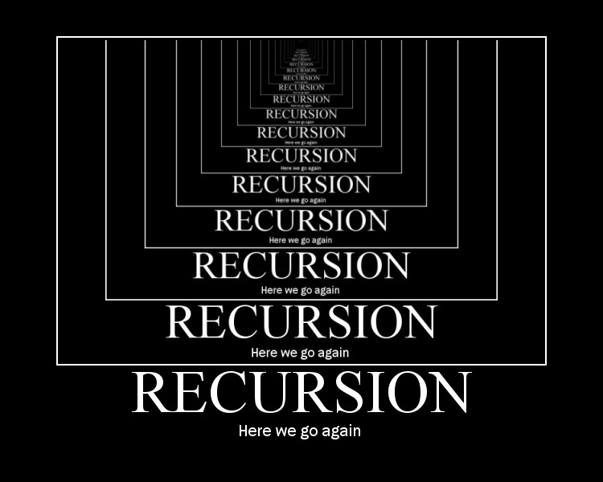

→ iza tog naziva krije se uporaba petlji
→ ponavljanje nekog izračuna (algoritma) koje izvodimo u petlji

→ “samoupravljanje”
→ funkcija koja poziva samu sebe
→ Rekurzija daje znatno kraće rješenje (u kodu odnosno zapisu), ali je potrebno više vremena i memorije za izvršavanje
→ mora imati uvjet zaustavljanja (pažljivo konstruirani)
→ mora biti konvergentna
Dobar primjer funkcije koja se može izvršavati rekurzivno i iterativno je funkcija koja izačunava Fibonaccijev niz.